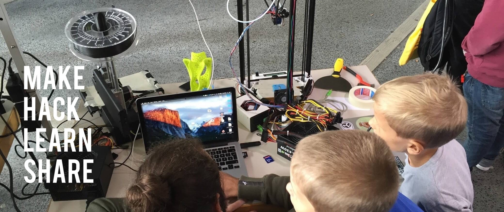
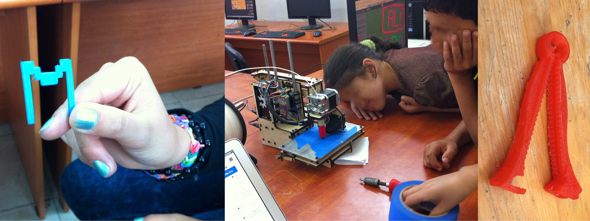

3D printing and digital fabrication for education and the common good¶
Workshop at the International Conference on Communities and Technologies (C&T 2017)

About the workshop¶
3D printing has become an area of intense interest in a variety of contexts in research and practice ranging from industry through education, humanitarian to innovation. At the same time, technologies, materials, usages and appropriation are in constant flux. 3D printing is, however just one of the many facets of digital fabrication, the digitalization of more and more sectors and increasingly community-based innovation and open/commons-oriented engineering practices.
This workshop at C&T 2017 conference is intended to illustrate and discuss cases, positions, concepts and experiences related to such developments in digital fabrication, especially in 3D printing. We specifically look for contributions highlighting the role of digital fabrication and 3D printing for the common good and in educational contexts. Interested in participating?
Important Dates¶
June 1, 2017: submission deadline¶
June 9, 2017: notification of acceptance / program update¶
June 26-30, 2017: Workshops at C&T (26th or 27th)¶
Workshop description as PDF¶
The full proposal for the Workshop at C&T in PDF form contains most of the information reflected on this website as well as additional references.

All photos: Fab Lab Siegen: public workshop (upper), a child's personalized 3D print / working with digital fabrication in Palestine / an umbilical clamp intended for fabrication in humanitarian contexts (lower). CC BY 4.0.*